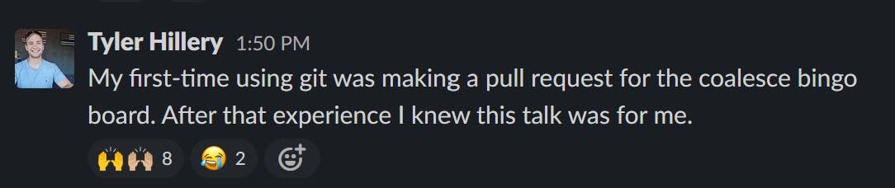
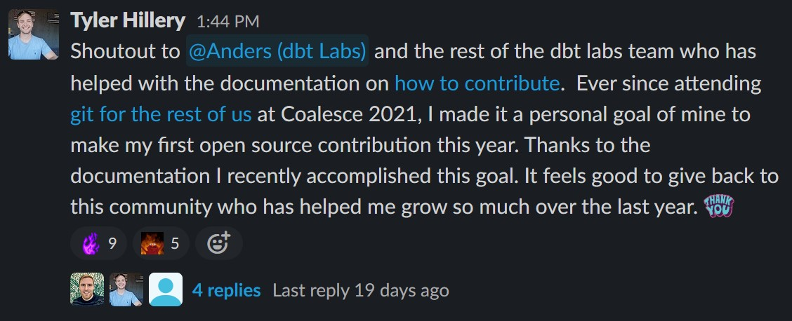

Why and How I Made My First Open Source Contribution
Start With Why
Why would I want to dedicate my free time to help out an open source project? Well there was many reasons as to why I wanted to do this:
- To give back
- Learn how to work on large active code base
- Be apart of a something bigger than me - a community.
I wasn’t just contributing to any open source project, this was dbt. Dbt is more than a tool that helps with transformation in your data warehouse, is it a community. A community built on empowering others to do more with data. It’s even built into their company’s values:
We contribute to the knowledge loop.
The highest goal of any human is to produce new knowledge that can subsequently be built upon by others. This is the process upon which every good thing in human society has been built. We participate in this most fundamental of human endeavors by thinking in public and defaulting to open source.
We believe in moving up the stack..
We believe that all team members should seek to replace themselves on an ongoing basis by building processes, technology, and documentation that obviate their existing work. We have an abundance mindset: there is always more, and more valuable, work to do. Moving up the stack presents growth opportunities for both the individual and the team.
I first discovered dbt in 2021 because I kept hearing about the “Modern Data Stack” and had to know what the hype was about. This lead me to come across a video by Tristan Handy, who I soon discovered was the ceo & co-founder of dbt, titled The Modern Data Stack: Past, Present, Future. This video was a turning point in my career & life. It led me down a rabbit hole of reading through the Analytics Engineering Roundup, The Analytics Engineering Guide, dbt blog and discovering I am a purple person.
The best way I could describe what I was feeling after discovering this community was understood. Not even a few months later I even applied to dbt labs & this is how I responded to a couple of their application questions (shortened).
Why is dbt Labs and this role appealing to you?
In a world of specialization, I have felt like a square peg being fit into a round hole. I was stuck at the intersection between the business & technical domain. Discovering the practice of analytics engineering, pioneered by dbt Labs, has been empowering because it has defined a role that best fits my strengths. Leveraging my business & technical skills to help disseminate organizational knowledge & empower analysts. Working for dbt Labs appeals to me because I really believe in your mission, values & product and it would be something I can really get behind…
What are you looking for in your next role?
In my next role I am looking for an opportunity for professional growth & to work for a company whose mission I firmly believe in. Dbt labs has cultivated this movement of empowering analysts just like me: That is something I want to help contribute to. With dbt labs being on the forefront of new data technology & principals (analytics engineering), I can’t think of a better place that would help me grow professionally.
Now I didn’t get the role, which is understandable I only had couple months of dbt experience mainly from the dbt fundamentals course but the dbt Kool-Aid was so strong it made me overly confident in my abilities at the time. This didn’t mean I couldn’t be apart of the dbt community. Shortly after discovering dbt I found like minded individuals hang out at dbt-slack, Locally Optimistic and Data Twitter. I decided to enrich myself in this world without knowing the profound impact it would have on my career.
One of the most memorable experiences I had was attending Coalesce 2021: The Analytics Engineering Conference. I wanted to find ways to be more active in the virtual conference and found out someone came up with a clever Coalesce Bingo game as a fun way to make the virtual conference more engaging. The creator was looking for some help on ideas for more squares and I wanted to contribute but there was a problem… I didn’t really understand git.
My version of git was copying a file and moving it into a folder called “Backups”. Luckily, the creator of the bingo game was kind enough to answer a few of my questions on how to open a pull request to have my idea for a square added. This interaction was very enlightening to me. You’re telling me there are thousands of people out in there in the world collaborating on projects together without knowing each other? I mean, I have heard of open source software and projects before but to think I could just go ahead and start contributing to these projects myself was a profounding thing to me. It made me realize behind all these open source projects are just people like me.
I knew if I wanted to start contributing to larger open source projects it would be best to get the hang of git. Coincidentally, there was a workshop going on at Coalesce 2021, Git for the rest of us.

Of course I had to drop a git related pun..
My main takeaway from this conference was I wanted to not only be apart of this community but I want to contribute to it. It was then and there I made it a personal goal to start contributing to dbt.
The How
There are many ways to get involved with open source projects. One of the best ways to find something to work on is to find issues on GitHub tagged with “good first issue” and dbt team defines this tag in their OSS expectations as:
This issue does not require deep knowledge of the codebase to implement. This issue is appropriate for a first-time contributor.
After looking into some issues I discovered this issue 👉🏻 Add more adapters to the available adapters page. One of those adapters happened to be DuckDB which happens to be another open source project I am very interested in. This was perfect opportunity to get my feet wet in contributing to open source. It was extremely helpful the dbt team had excellent documentation on how to do this.
I went ahead and followed the instructions outlined in the documentation and open up my first ever PR which was approved shortly after. I even gave a shout-out on the #case-when dbt-slack channel to thank all the people who helped along the way.

Conclusion
If you are someone who is interested or thought about getting contributing to open source, go for it! Look for projects which resonate you, that you believe in. This will drive you, motivate you to overcome areas you’re unfamiliar with. Join the communities who support these projects and don’t be afraid to reach out for help. Remember everyone was once where you were. Behind all open source projects and software are people just like you.